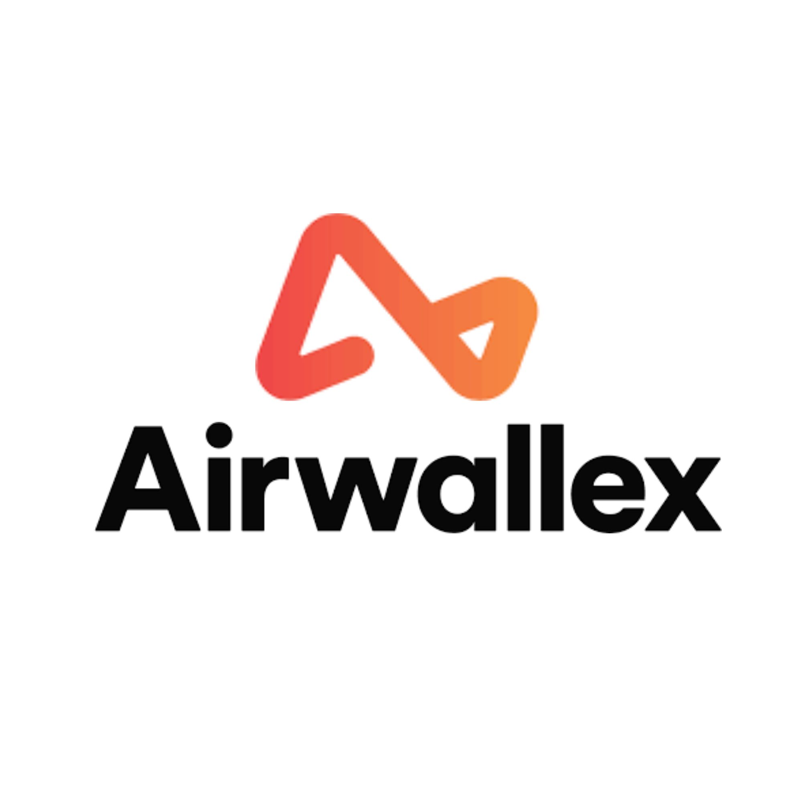
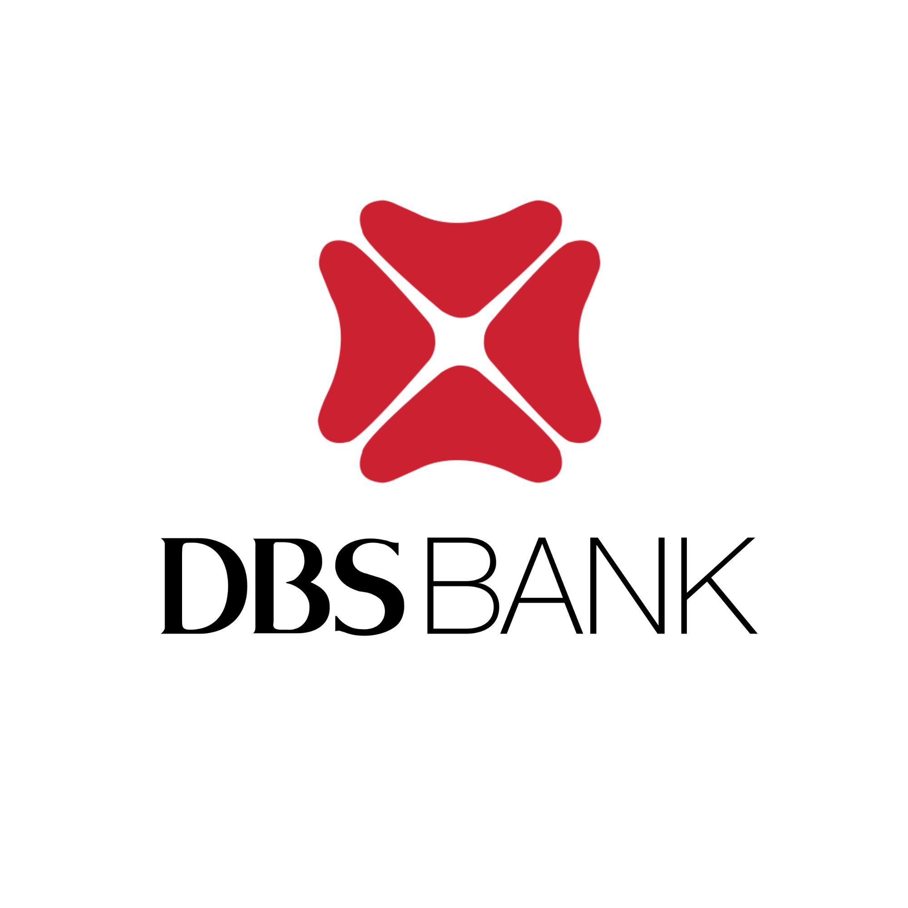
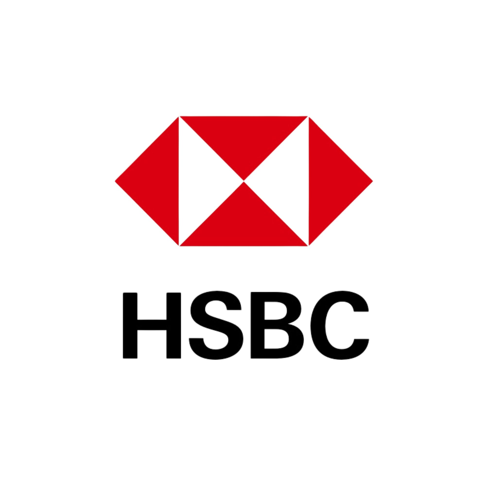
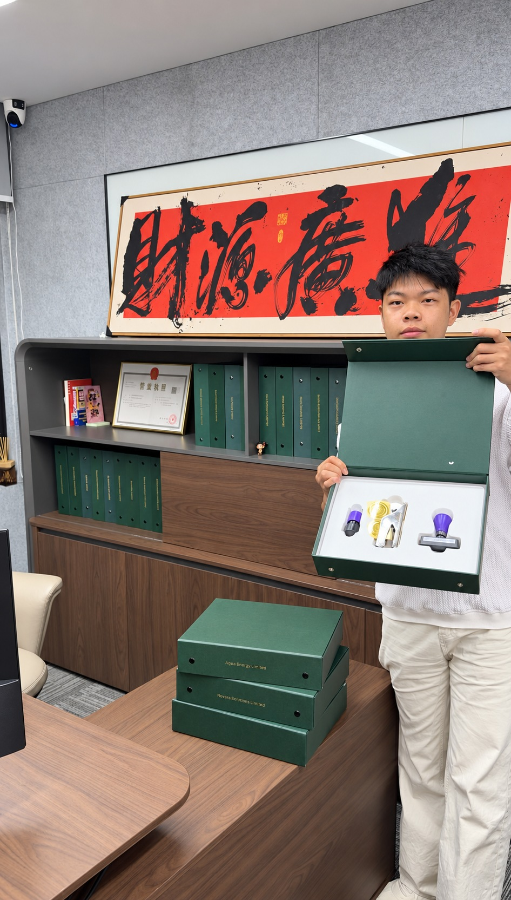
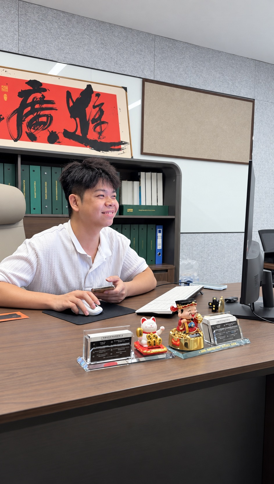

Built for international business
One company to bring your contracts, customers and suppliers together.
HONG KONG · CHINA · INTERNATIONAL
You have the ambition. Give it the right structure. Company formation, banking solutions and annual support: Luminos helps you take your business international.

YOUR BUSINESS, WELL CONNECTED



The right solution depends on your business and each institution’s requirements.
A BASE FOR BIGGER AMBITIONS
Selling online, serving clients overseas or sourcing in Asia? Your company structure should keep pace with your business.

One company to bring your contracts, customers and suppliers together.
Bring your business closer to your trading partners and the region’s business ecosystem.
Business accounts, currencies and transfers: we help you prepare an application that reflects your transactions.
Business activity, documents and annual obligations: understand what to prepare and what comes next.
BUILT AROUND YOUR BUSINESS

Your store is growing and your customers span several countries. Build a company that fits your business model, suppliers and payment needs.
THE LUMINOS APPROACH
A clear path to setting up, organising and managing your business. Know what is included and what happens next.
We help you incorporate your Hong Kong company and prepare the documents that establish your business.
We help you prepare a business account application that reflects your activity and the institution’s requirements.
Explore our banking support ↗Access your documents and follow your application’s progress from your client portal.
Go to my client portal ↗Renewals, address and documents: stay ahead of your next deadlines with our annual package.
Explore annual support ↗FROM BUSINESS TO TRANSACTIONS
Receive payments, pay suppliers and work across currencies. Your banking solution should fit the way your business operates.
Understand your needsCountries, currencies, customers, suppliers and the nature of your business.
Prepare a strong applicationCompany documents, identification and evidence of your business activity.
Support your applicationChoose a solution and keep track of the documents requested by the institution.
Account approval, features, fees and any travel requirements depend on the institution you choose.
One company. International transactions.
OUR BANKING PARTNER
Company incorporated? Visit our partner Airwallex to start your business account application online.
Get started with Airwallex ↗Partner link · Account opening is subject to Airwallex’s approval.

A company in Hong Kong.
Business without borders.
FROM IDEA TO COMPANY
You bring your project and documents. We guide you through incorporation and the steps that follow.
Your activity, goals and banking needs. We start by asking the right questions.
Identification, proof of address and company details: we explain exactly what is needed.
Your application is prepared and submitted. Track its progress from your client portal.
You receive your company documents. We continue with banking assistance and prepare your annual support.
Timing depends on a complete application and the organisations involved. Account opening follows a separate timeline.
Discuss my project ↗YOUR COMPANY, MADE REAL
Here is what a Hong Kong company kit looks like, presented in our offices.


INSIDE YOUR COMPANY KIT
Certificate of Incorporation, Articles of Association and registration documents: the records that identify your company and set out how it operates.
 INSIDE LUMINOS
INSIDE LUMINOSA TEAM BEHIND YOUR PROJECT
Setting up a company brings questions. You should be able to ask someone who knows your application.
At Luminos, digital tools simplify the process. Personal support makes it work: understanding your activity, helping you gather documents and explaining the next steps.
UNDERSTANDING OFFSHORE
In business, “offshore” describes a company established in one jurisdiction whose business activities take place outside it.
Hong Kong’s territorial principle ↗Your company is registered in Hong Kong, while its commercial operations take place internationally: selling products, delivering services or trading with overseas partners.
Hong Kong applies a territorial tax system: the source of profits is central. Foreign-sourced trading profits may be exempt from Hong Kong profits tax under the applicable source rules.
The focus is on the operations that generated the profits and where those operations took place. This connection between international activity and territorial taxation explains Hong Kong’s role in offshore structures.
LUMINOS PACKAGES
Formation and renewal are separate stages. Here is what each package includes.
To incorporate your company and prepare your first steps.
To organise your company’s annual renewal requirements.
Need accounting, an audit, a specific licence or tax advice? Let’s clarify the scope and any additional fees before you order. Banking fees depend on the solution you choose.
 🇨🇳 MAINLAND CHINA
🇨🇳 MAINLAND CHINAYOUR NEXT BUSINESS LOCATION
Looking to set up a company in mainland China? The right city and structure depend on your business activity.
Tell us what you want to build, with whom and where. Luminos helps define your formation project and prepare a tailored quote.
Let’s talk about your China project ↗CLIENT FEEDBACK
“Company opened in 5 days. Excellent follow-up.”
A remarkably smooth process. My Hong Kong company was operational in under 72 hours. Tracking progress through the dashboard was particularly reassuring.
Luminous helped me structure my international e-commerce business professionally. The team is responsive on WhatsApp, even on weekends.
I had tried other providers before. Luminous is in a different league: professional, transparent, and the bank account was opened without a hitch.
YOUR QUESTIONS, ANSWERED
Have a specific situation? Your project deserves a tailored answer.
Ask my question ↗Company formation can be handled remotely. Business account requirements vary by institution: an interview or an in-person visit may be requested.
Prepare a valid identity document, recent proof of address and details of the business and the people involved in the company. We confirm the list for your application. The bank may request additional documents.
We provide a timeline after reviewing your application. Timing depends on the documents available and processing by the relevant organisations. Company formation and account opening are separate processes.
We help you prepare your application and meet the institution’s requirements. The final decision rests with the institution and depends on your activity, transactions and supporting documents.
Your company’s incorporation documents, including the Certificate of Incorporation and Articles of Association, are made available to you. Your client portal gives you access to documents and application progress.
The company is registered in Hong Kong and operates internationally. Under Hong Kong’s territorial principle, the source of profits is determined by the operations that produce them and where those operations take place.
A company needs to manage its administration, renewals and applicable accounting and tax obligations. Our annual package lists the renewal services included; we clarify any additional needs with you.
Yes. We review your activity, preferred city and business plans to prepare a tailored quote.
EXPLORE FURTHER
Understand the steps and documents you need.
Read the guide ↗02 / BANKINGAnticipate questions and prepare your documents.
Read the guide ↗03 / STRUCTUREUnderstand international activity and the territorial principle.
Explore the basics ↗YOUR NEXT STEP
Tell us about your business and what you want to build. We start with your project, then work out the next steps.
Chat directly on WhatsApp ↗